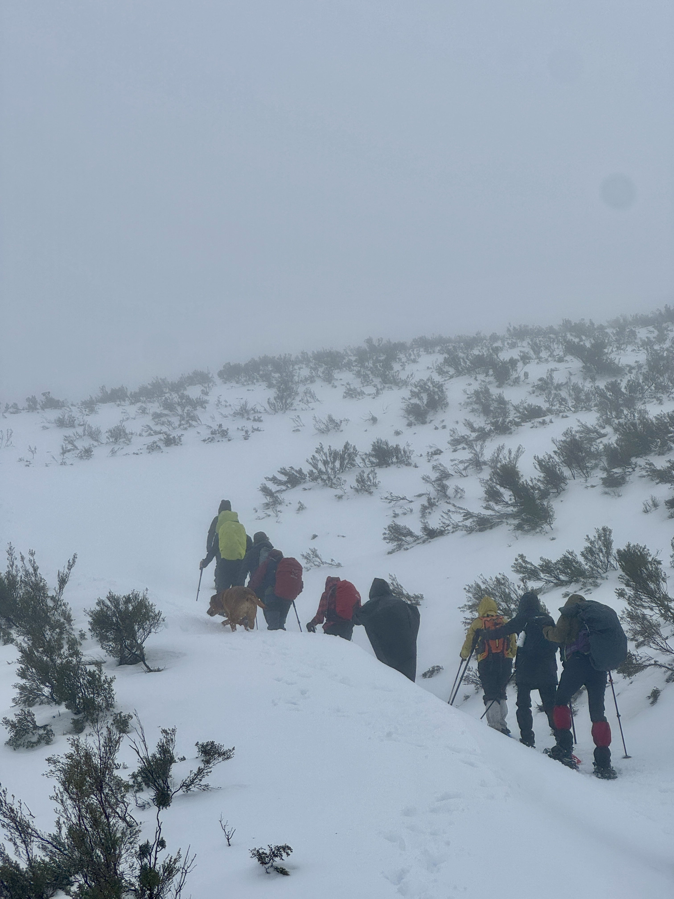
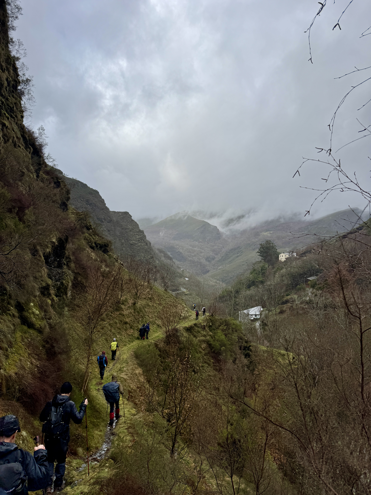
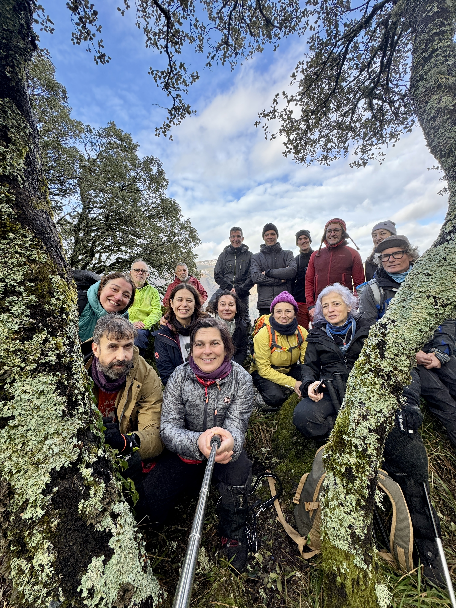
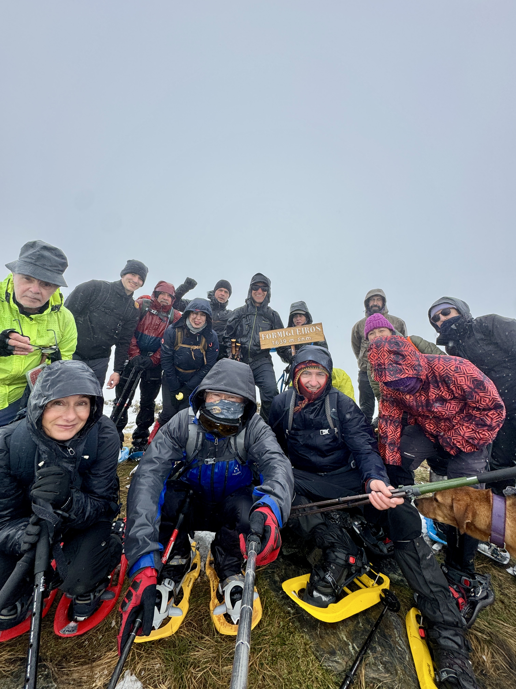
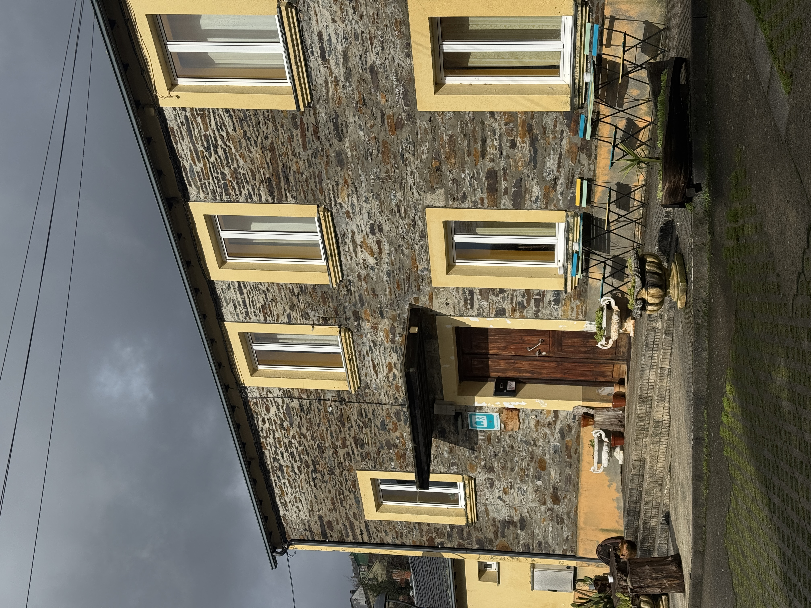

Los días 30 y 31 de enero y 1 de febrero de 2026, la Sierra del Caurel, en Lugo, situada al sureste de la provincia entre las comarcas de O Cebreiro y Valdeorras, fue escenario de una nueva actividad organizada por la sección de montaña. Aunque tradicionalmente este macizo no formaba parte habitual de la programación debido a su relieve suave y redondeado, alejado del carácter alpino clásico, la evolución del enfoque montañero permitió reconocer que determinados itinerarios del Caurel presentan una exigencia técnica y física que justifica plenamente su inclusión en el calendario.
En colaboración con Artabros Sociedad de Montaña se desarrolló una actividad de montañismo en uno de los espacios naturales más singulares de Galicia. Este macizo, de relieve antiguo, se caracteriza por montañas de formas redondeadas profundamente modeladas por una densa red fluvial. Los ríos Selmo, Soldón y Lor han excavado estrechos valles encajados que configuran un paisaje abrupto y de gran belleza. Entre sus cumbres más representativas destacan el Formigueiros y el Pía Páxaro, que centraron las ascensiones del fin de semana.

La Sierra del Caurel confirmó durante la actividad su extraordinario valor ecológico, fruto de la combinación de influencias euroasiáticas y mediterráneas. A pesar de ocupar apenas el 2% del territorio gallego, alberga más del 90% de las especies vegetales presentes en Galicia, superando el millar de plantas catalogadas. Los participantes pudieron recorrer bosques orientados al norte donde prosperan castaños, avellanos y robles, así como zonas de mayor altitud en las que aparecen tejos, acebos y hayas, formando algunos de los hayedos más occidentales de Europa.
La riqueza faunística del entorno también estuvo muy presente. En la sierra se han identificado más de 160 especies de vertebrados, con una presencia cada vez más habitual del oso pardo, además de especies emblemáticas como el lobo, el corzo, la marta, el tejón o el gato montés. En el ámbito ornitológico destacó la referencia al águila real, que nidifica en las paredes superiores de la Devesa de Paderne, junto a otras rapaces como el azor o el búho real, y la frecuente presencia de chovas.
Pía Páxaro desde Ferreirós por Penaboa (1610m)
31 enero

El sábado 31 salimos a las 9:00 desde el parking de la Cantina O Pontón, dirección Pia Paxaro y Pena Boa. Por razones del la baja visibilidad que aportaban las nubes tan bajas, el itinerario se tuvo que acortar. En el inicio atravesando el frondoso bosque paralelo al río, tras 600 m recorridos inicia el ascenso pronunciado de 1,5 km con 400 m de desnivel, alcanzando los 1032 m.s.n.m. en Pico do Coto, desde este, recorremos una pista forestal para poder llegar a Ferreiros de Ariba y atravesar nuevamente los casi 3 km de bosque paralelos al río, legando al final, nuevamente a Ferreiros de Abaixo. Esta ruta constó de casi 8 km y 500 m de desnivel acumulado, completándolo en 4 horas. La lluvia en el inicio no hizo presencia, a medida que ascendíamos hacia Pico do Coto, atravesando las nubes, pudimos notar tanto el aire como las precipitaciones esperadas.
Tras este cambio de itinerario que no era el original, y para no quedarnos con el mal sabor de boca, nos dispusimos a realizar el itinerario Val das Mouras en Seoane, con escasos 2 km de distancia y 70 m de desnivel. Llevándonos 1 hora pudiendo apreciar las figuras presentes en las formaciones rocosas, como cavidades y pasillos además de las formas similares a rostros fantásticos en su vegetación. Además de este, también nos dispusimos a visitar el inapreciable Castro de Brío en Mercurín, con unos aproximados 4 km de distancia y 200 m de desnivel acumulado. Tardando en esta unas 2 horas en realizar el ascenso y descenso por el mismo trayecto.
Formigueiros desde Moreda (1639m)
1 febrero

El domingo 1 de febrero Salimos a las 10:00 desde el Aula de la Naturaleza de Moreda del Caurel, dirección Formigueiros. En el inicio abrigados por el bosque ascendiendo 4,5 km con un desnivel positivo de 600 m por senderos a partes iguales de nieve y hojas caidas. Tras esto, alcanzamos la fuente del ciervo y haciendo una parada para preparar el ascenso a Formigueiros con las raquetas para facilitar la progresión en la nieve. Tras 2 km más y 300 m de desnivel positivo, llegamos al esperado Formigueiros, con 1.639 m.s.n.m. Una vez coronado, no nos detuvimos mucho tiempo debido al aire cortante y baja visibilidad que provocaron el descenso inmediato. Acumulando así casi 12 km de distancia y 915 m de desnivel acumulado, completándola en 6 horas y 30 minutos.
Albergue de Folgoso de Caurel

Durante el fin de semana, el grupo se alojó en el Albergue de Folgoso do Courel, situado en Folgoso de Caurel. El establecimiento ofreció un ambiente cálido y familiar, con instalaciones cuidadas y confortables. Sus espacios comunes, dormitorios con literas, baños y calefacción central garantizaron una estancia agradable en pleno invierno. Además, el albergue dispuso de cocina equipada, vajilla y ropa de cama, facilitando la logística del grupo y contribuyendo al buen desarrollo de la actividad.